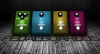
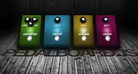
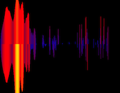
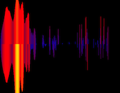
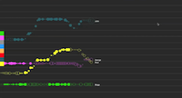
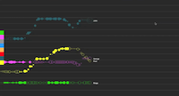
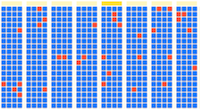
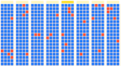
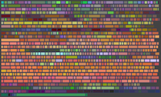
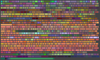

Web Audio Examples
The Web Audio API introduces a variety of new audio features to the web platform. It can be used with the canvas 2D and
WebGL 3D graphics APIs for creating a new generation of games and interactive applications.
The API is capable of dynamically positioning/spatializing and mixing multiple sound sources in three-dimensional space.
It has a powerful modular routing system, supporting effects, a convolution engine for room simulation, multiple sends, submixes, etc.
Scheduled sound playback is provided for musical applications requiring a high degree of rhythmic precision. Realtime analysis / visualizer support and direct JavaScript processing is also supported.
These APIs are currently under development and are described in this specification document.
Please direct any feedback to
the W3C audio mailing list - public-audio@w3.org.
Getting Started
*** These samples require a browser which supports the Web Audio API. ***

Mac OS X, Windows, and Linux
Builds are available in stable releases of Chrome.
More cutting-edge builds are available in the Canary builds. Please be aware that the
Canary builds are nightly builds which are not very well tested and can be unstable.

Mac OS X
Web Audio is available in Apple Safari 6 in Mountain Lion, and in iOS 6.
More cutting-edge nightly builds are also available. For these builds,
before running, it might be necessary to enable by going into the "Terminal" application and typing:
$ defaults write com.apple.Safari WebKitWebGLEnabled -bool YES
$ defaults write com.apple.Safari WebKitWebAudioEnabled -bool YES
$ defaults write com.apple.Safari com.apple.Safari.ContentPageGroupIdentifier.WebKit2WebAudioEnabled -bool YES
$ defaults write com.apple.Safari com.apple.Safari.ContentPageGroupIdentifier.WebKit2WebGLEnabled -bool YES
Firefox
Firefox has also started work on the Web Audio API, with cutting-edge builds available here.
Samples
|
|
Drum Machine
is an interactive musical application illustrating the concept of "scheduled playback" where sounds can be sequenced very accurately in time.
A variety of special effects are available. Have fun with the demo presets, then experiment with your own creations. Demo courtesy of Ken Moore.
(old demo here)
|
|
|
Convolution Effects. The powerful convolution engine is able to reproduce the sound of just about any real-world acoustic space but is also able to create some interesting special effects such as backward reverbs and strange filters. |
|
|
WaveTable Synth
is a four oscillator mono/poly synth. Have fun tweaking the delays and other controls. |
|
|
Digital DJ is a fun example where beat-matched loops may be loaded onto a left and right virtual turntable and controlled with a cross-fader, 2pole resonant filters, and an echo-delay effect. |
|
|
Granular Effects is another example of "scheduled playback" like Drum Machine. Here, the sound samples are small pieces (called "grains") taken from a larger sound buffer of a woman speaking. These small grains are then composited in various time sequences controllable by the sliders to achieve a crude but interesting time-stretching effect. Each of the grains may be changed in pitch, time, diffusion, and panning (positioning). |
|
|
Realtime Analyser. is a visualizer using WebGL.
Also check out a version of this which visualizes live audio input from your microphone or other audio source. This one currently only
works in Mac Chrome Canary and requires enabling "Web Audio Input" in "about:flags":
|
|
|
box2d is an example of an interactive application with a real-time physics engine.
You can drop objects by clicking anywhere on the screen.
The collisions between the objects are accompanied by sound effects which take into account the positions of the objects,
as well as the force of the impacts.
Physics engine courtesy of www.box2d.org.
|
|
|
Oscillators This is a basic example using three oscillators. |
|
|
FM Synthesis This shows off an FM structure, using three oscillators: two modulators and one carrier. |
|
|
Web MIDI API synth This subtractive synth can be played with the
Web MIDI API , which is available as an experimental feature in Chrome Canary (currently OSX). To enable it, please go to "about:flags" and "Enable Web MIDI", then click on the "Relaunch" button at the bottom.
|
|
|
Panning/Reverb This sample allows the user to move various sounds around in 3D space and explore different kinds of acoustic environments. |
|
|
8-ball A virtual pool game complete with sound effects.
It uses WebGL (originally ported from o3d). |
|
|
JavaScript Processing demonstrates how it's possible to do custom audio signal processing directly
in JavaScript. Here we're processing audio using a simple amplitude modulator effect, then visualizing the results. It's interesting to see how the side-bands move
as the modulation frequency is changed.
|
|
|
Doppler Shift is a demo where an object is animated around the listener and illustrates
both 3D spatialized positioning and doppler shifting, where the pitch of a sound increases as it moves toward the listener and decreases as it moves away.
It's possible to change the trajectory of the object left/right, front/back, and up/down, as well as to select some parameters such as speed, pitch,
and sound source.
|
More Demos

 


 


 

 


 
